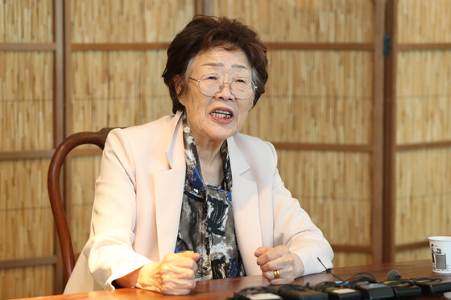

This page is dedicated to Lee Yong-soo, is a former comfort woman from South Korea. Lee was forced to serve as a sex slave during World War II by the Imperial Japanese Army. She is one of the youngest comfort women still living.
Lee Yong-soo was born in Daegu, South Korea on December 13, 1928. Lee was sixteen when she was forced to become a comfort woman.
Lee first came forward to testify about her experience as a comfort woman in June 1992. She was influenced by Kim Hak-sun's press conference on TV to finally talk to others. Yong-soo registered with the Korean government as a comfort woman. She was the twenty-ninth woman to testify about her experiences.